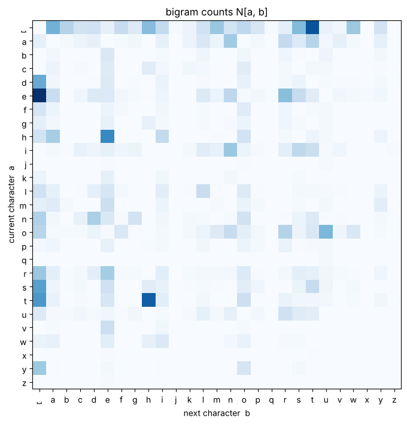
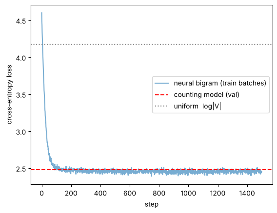
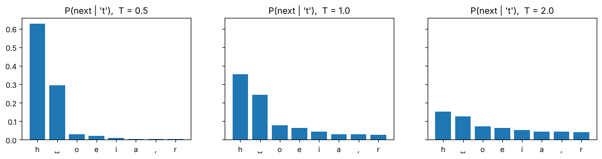

Behind the Secrets of LLMs, crash course part 2
In notebooks 0 to 3 we fitted lines, curves and handwritten digits. From now on the data is text, and the task is the one every LLM solves: given the text so far, guess the next token.
In this notebook we
- turn text into numbers (tokenization), first with characters and then with a small BPE that we write ourselves,
- build a language model that simply counts which character follows which (a bigram model),
- measure how good it is with the negative log-likelihood, cross-entropy and perplexity,
- learn the same model with gradient descent in PyTorch, using the training loop from notebook 3b,
- generate text and control it with the temperature.
Time: about 45 minutes. A CPU is enough (in Colab: Runtime > Change runtime type > CPU).
import math, os, urllib.request, collections
import torch
import torch.nn as nn
import torch.nn.functional as F
import matplotlib.pyplot as plt
torch.manual_seed(42)
show_ch = lambda c: {" ": "␣", "\n": "\\n"}.get(c, c) # make spaces/newlines visible in plots
print("torch", torch.__version__)torch 2.14.1+cu130
1. Text is just a long list of characters#
We use tiny Shakespeare, about 1 MB of Shakespeare plays in a single text file.
URL = "https://raw.githubusercontent.com/karpathy/char-rnn/master/data/tinyshakespeare/input.txt"
if not os.path.exists("input.txt"):
urllib.request.urlretrieve(URL, "input.txt")
with open("input.txt", encoding="utf-8") as f:
text = f.read()
print(f"{len(text):,} characters")
print(text[:300])1,115,394 characters First Citizen: Before we proceed any further, hear me speak. All: Speak, speak. First Citizen: You are all resolved rather to die than to famish? All: Resolved. resolved. First Citizen: First, you know Caius Marcius is chief enemy to the people. All: We know't, we know't. First Citizen: Let us
2. Tokenization: from text to integers#
A neural network only works with numbers. A tokenizer maps text to a list of integer IDs from a fixed vocabulary :
and decode turns the IDs back into text. The simplest choice is one token per character.
chars = sorted(set(text))
V = len(chars)
stoi = {ch: i for i, ch in enumerate(chars)} # string -> integer
itos = {i: ch for ch, i in stoi.items()} # integer -> string
encode = lambda s: [stoi[c] for c in s]
decode = lambda ids: "".join(itos[i] for i in ids)
print("vocabulary size |V| =", V)
print("vocabulary:", repr("".join(chars)))
print(encode("Hello there!"))
print(decode(encode("Hello there!")))vocabulary size |V| = 65 vocabulary: "\n !$&',-.3:;?ABCDEFGHIJKLMNOPQRSTUVWXYZabcdefghijklmnopqrstuvwxyz" [20, 43, 50, 50, 53, 1, 58, 46, 43, 56, 43, 2] Hello there!
Characters, words, or something in between?
| tokens are | vocabulary | sequence length | problem |
|---|---|---|---|
| characters | tiny (about 65) | very long | the model has to learn spelling, and the context fills up fast |
| words | huge (100k and more) | short | unknown words, and run, runs, running get unrelated IDs |
| subwords (BPE) | you choose (e.g. 50k) | medium | this is what GPT, Llama and Qwen use |
Byte-Pair Encoding (BPE) starts from single bytes and keeps merging the most frequent pair of neighbouring tokens into a new token. It only takes a few lines, so let's write it.
def get_pair_counts(ids):
# count how often each adjacent pair (a, b) occurs
return collections.Counter(zip(ids, ids[1:]))
def merge(ids, pair, new_id):
# replace every occurrence of `pair` by the single token `new_id`
out, i = [], 0
while i < len(ids):
if i < len(ids) - 1 and (ids[i], ids[i + 1]) == pair:
out.append(new_id); i += 2
else:
out.append(ids[i]); i += 1
return out
# train BPE on a slice of the text, starting from raw UTF-8 bytes (256 base tokens)
train_ids = list(text[:20000].encode("utf-8"))
ids = list(train_ids)
merges = {} # (a, b) -> new token id
vocab = {i: bytes([i]) for i in range(256)}
for k in range(60): # 60 merges -> vocabulary of 256 + 60 tokens
pair = get_pair_counts(ids).most_common(1)[0][0]
new_id = 256 + k
ids = merge(ids, pair, new_id)
merges[pair] = new_id
vocab[new_id] = vocab[pair[0]] + vocab[pair[1]]
print("first 15 merges:", [vocab[256 + k].decode("utf-8", "replace") for k in range(15)])
print(f"{len(train_ids):,} bytes -> {len(ids):,} tokens (compression x{len(train_ids) / len(ids):.2f})")first 15 merges: ['e ', 'th', 't ', 's ', 'ou', ', ', 'd ', 'r ', 'in', 'an', 'en', ':\n', 'y ', '\n\n', 'er'] 20,000 bytes -> 13,228 tokens (compression x1.51)
def bpe_encode(s):
ids = list(s.encode("utf-8"))
while len(ids) >= 2:
# apply the merge that was learned EARLIEST among the pairs present
pair = min(get_pair_counts(ids), key=lambda p: merges.get(p, float("inf")))
if pair not in merges:
break
ids = merge(ids, pair, merges[pair])
return ids
def bpe_decode(ids):
return b"".join(vocab[i] for i in ids).decode("utf-8", errors="replace")
s = "First Citizen: the citizens are hungry."
toks = bpe_encode(s)
print(len(s), "characters ->", len(toks), "BPE tokens")
print([bpe_decode([t]) for t in toks])
assert bpe_decode(toks) == s39 characters -> 25 BPE tokens ['F', 'ir', 'st ', 'C', 'it', 'i', 'z', 'en', ': ', 'the ', 'c', 'it', 'i', 'z', 'en', 's ', 'ar', 'e ', 'h', 'u', 'n', 'g', 'r', 'y', '.']
Try it: encode a German or Hindi sentence with bpe_encode. Our BPE has only seen English, so how many tokens per character do you get now? Notebook 6 does the same with real LLM tokenizers.
For the rest of this notebook we stay with characters. The vocabulary is small and easy to look at.
3. A language model gives text a probability#
With the chain rule of probability, any text can be scored one token at a time:
An LLM is a function that gives us . The bigram model makes a very strong simplification and only looks at the previous token:
The easiest way to estimate this is to count how often character comes after character .
data = torch.tensor(encode(text), dtype=torch.long)
n = int(0.9 * len(data))
train_data, val_data = data[:n], data[n:] # hold out 10% to measure generalisation
N = torch.zeros((V, V), dtype=torch.long) # N[a, b] = how often b follows a
N.index_put_((train_data[:-1], train_data[1:]), torch.ones(n - 1, dtype=torch.long), accumulate=True)
# look at the counts for lowercase letters + space
show = [stoi[c] for c in " abcdefghijklmnopqrstuvwxyz"]
plt.figure(figsize=(8, 8))
plt.imshow(N[show][:, show], cmap="Blues")
plt.xticks(range(len(show)), [show_ch(itos[i]) for i in show])
plt.yticks(range(len(show)), [show_ch(itos[i]) for i in show])
plt.xlabel("next character b"); plt.ylabel("current character a")
plt.title("bigram counts N[a, b]"); plt.show()
If we divide each row by its sum, the counts become a probability distribution over the next character:
The is called smoothing. It makes sure that no probability is exactly 0. Now we can sample text, one character at a time.
P = (N + 1).float()
P = P / P.sum(dim=1, keepdim=True) # every row sums to 1
def sample_bigram(P, n_chars=300, start="\n"):
g = torch.Generator().manual_seed(0)
ix, out = stoi[start], []
for _ in range(n_chars):
ix = torch.multinomial(P[ix], num_samples=1, generator=g).item()
out.append(itos[ix])
return "".join(out)
print(sample_bigram(P))th remofed hexpselteredoca meaman youd INAlste grecofurey h fotherere hath thig berelisseanongilost. tho y we w ke RYORD: Widarthofr nd; my f tsoo we w y mer aim whioervoto, Pre co n s uzed I s h. fo INVeprf pllie-milyompofond ssay eint odeld fleome igle inkee he t, As toinobo y tonesthast st hayowa
It looks a bit like Shakespeare letter by letter, but not word by word. To compare models we need a number.
4. How good is a language model?#
A good model gives a high probability to real text it has not seen before. For a held-out text we look at
- the likelihood . This is a tiny number, so we take logs.
- the negative log-likelihood per token, also called the cross-entropy:
- the perplexity . You can read it as "the model is as unsure as if it had to pick uniformly from PPL options".
A quick sanity check: a model that knows nothing picks uniformly from all characters, so and .
def nll(P, d):
return -torch.log(P[d[:-1], d[1:]]).mean().item()
uniform = math.log(V)
print(f"uniform model : loss {uniform:.3f} perplexity {math.exp(uniform):5.1f}")
print(f"bigram (train): loss {nll(P, train_data):.3f} perplexity {math.exp(nll(P, train_data)):5.1f}")
print(f"bigram (val) : loss {nll(P, val_data):.3f} perplexity {math.exp(nll(P, val_data)):5.1f}")uniform model : loss 4.174 perplexity 65.0 bigram (train): loss 2.455 perplexity 11.6 bigram (val) : loss 2.482 perplexity 12.0
5. The same model, learned with gradient descent#
Counting stops working once the context is longer than one token. Neural language models learn the probabilities instead. For the bigram case the whole network is one weight matrix :
- one-hot encode the current character:
- compute the logits (raw scores) , which is just row of
- turn them into probabilities with the softmax:
- the loss is the cross-entropy with the real next character :
"One-hot times a matrix picks a row" is exactly what nn.Embedding does. It is the first layer of every LLM.
W = torch.randn(V, V)
a = stoi["h"]
one_hot = F.one_hot(torch.tensor(a), V).float()
print("one-hot @ W == W[a] :", torch.allclose(one_hot @ W, W[a]))
emb = nn.Embedding(V, V) # a learnable lookup table
print("embedding output shape:", emb(torch.tensor([a, stoi["e"]])).shape)one-hot @ W == W[a] : True embedding output shape: torch.Size([2, 65])
class BigramLM(nn.Module):
def __init__(self, V):
super().__init__()
self.table = nn.Embedding(V, V) # logits for the next char, one row per current char
def forward(self, idx, targets=None):
logits = self.table(idx) # (B, V)
loss = None if targets is None else F.cross_entropy(logits, targets)
return logits, loss
model = BigramLM(V)
opt = torch.optim.Adam(model.parameters(), lr=0.05)
def batch(d, bs=4096):
ix = torch.randint(len(d) - 1, (bs,))
return d[ix], d[ix + 1] # (current char, next char)
history = []
for step in range(1500):
x, y = batch(train_data)
_, loss = model(x, y) # 1. forward
opt.zero_grad()
loss.backward() # 2. backward (autograd, as in notebook 3a)
opt.step() # 3. update
history.append(loss.item())
with torch.no_grad():
val_loss = F.cross_entropy(model.table(val_data[:-1]), val_data[1:]).item()
plt.plot(history, alpha=0.6, label="neural bigram (train batches)")
plt.axhline(nll(P, val_data), color="r", ls="--", label="counting model (val)")
plt.axhline(uniform, color="gray", ls=":", label="uniform log|V|")
plt.xlabel("step"); plt.ylabel("cross-entropy loss"); plt.legend(); plt.show()
print(f"neural bigram val loss {val_loss:.3f} vs counting {nll(P, val_data):.3f}")
neural bigram val loss 2.490 vs counting 2.482
Both end up at almost the same loss. Counting gives the maximum-likelihood answer, and gradient descent finds it too. The neural version has one big advantage: it still works for models where counting is impossible.
Why cross-entropy is so convenient
For logits , softmax output and one-hot target , the gradient is simply
the predicted probability minus the truth. Let's check that autograd agrees.
z = torch.randn(4, V, requires_grad=True) # logits for a batch of 4
y = torch.tensor([stoi["a"], stoi["b"], stoi["c"], stoi["d"]])
F.cross_entropy(z, y).backward() # mean over the batch
manual = (F.softmax(z, dim=1) - F.one_hot(y, V).float()) / 4
print("autograd == softmax - one_hot :", torch.allclose(z.grad, manual.detach(), atol=1e-6))autograd == softmax - one_hot : True
6. Controlling the output with the temperature#
Before sampling we can divide the logits by a temperature :
- for a small the model almost always picks the most likely token (greedy and repetitive)
- is the model's own distribution
- for a large the distribution gets flatter: more surprising text, and more mistakes
logits = model.table.weight[stoi["t"]].detach() # what follows the letter 't'?
top = torch.topk(logits, 8).indices
fig, axes = plt.subplots(1, 3, figsize=(14, 3), sharey=True)
for ax, T in zip(axes, [0.5, 1.0, 2.0]):
p = F.softmax(logits / T, dim=0)[top]
ax.bar([show_ch(itos[i.item()]) for i in top], p)
ax.set_title(f"P(next | 't'), T = {T}")
plt.show()
def sample_model(T, n_chars=200):
g = torch.Generator().manual_seed(1)
ix, out = stoi["\n"], []
for _ in range(n_chars):
p = F.softmax(model.table.weight[ix].detach() / T, dim=0)
ix = torch.multinomial(p, 1, generator=g).item()
out.append(itos[ix])
return "".join(out)
for T in [0.3, 1.0, 2.0]:
print(f"----- T = {T}\n{sample_model(T)}\n")
----- T = 0.3 I s there the ange be the the t hathe me t the the the thin he my ind me the thanghe he the the me withe the tor the the the the s hist t thanours me t the the me the t t t win t thin t the, there ----- T = 1.0 Caw; By M: The usil, thartie, by f ces. Bowin'sanvif tearaicadeemotiraim. s, aroflfogaiee, hees n, grit ofoutelor d: BUCO: ARYeatsishisot therdvees me y! we, d deh famy bu iswhit RLLLIUCLENa, it rsh ----- T = 2.0 Caw; qWers! me uagl,' thavieyoZo f ces. Bowin'sacvy ceeacaic heemotirawi. xpooroalfXgaiee, je's'd, gridgofZALelordd: Byt prn beatssasifotSt'Erdv$POH: Ra!'rehe-ghehckmmy bu izwhi'GRLLLNLOLuft, itursh
7. What is still missing?#
The bigram model only ever sees one previous character, so it cannot learn words, grammar or who is speaking. Its validation loss gets stuck around 2.5.
In notebook 5 (Attention and TinyGPT) every position can look at all the positions before it, using self-attention. Same data, same loss, same training loop, and much better text.
Exercises
- Tokens per language. Train the mini BPE with 200 merges. Compare the compression on English and on a German text you paste in.
- A trigram model. Count
N[a, b, c]in a tensor. Does the validation loss go down? What happens to the number of combinations you never saw? - Smoothing. Replace by and by . How do the train and validation loss change, and why?
- Perplexity. Compute the perplexity of the model on
"zzzzzzzzzz"and on"the the the". Why are they so different? - Temperature. Which temperature gives the lowest validation loss on the trained logits? Why?